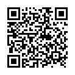
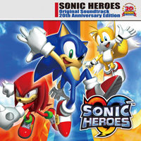
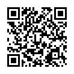
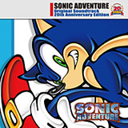
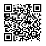

2011.11.09
ケータイ向け総合着信系コンテンツ配信サイト「セガカラMelody」にて、「ソニック･ザ･ヘッジホッグ」生誕20周年記念キャンペーン第3弾
セガが運営するケータイ向け総合着信系コンテンツ配信サイト｢セガカラMelody｣では、2011年11月9日（水）～15日（火）までの期間、サウンドクリエイター"幡谷尚史"＆"瀬上 純"のサイン入りCD『SONIC THE HEDGEHOG CD Original Soundtrack 20th Anniversary Edition』が抽選で5名様に当たるプレゼントキャンペーンを実施中！
※プレゼント応募は、会員・非会員を問わずどなたでもご応募いただけます！！
また「セガカラMelody」では、"ソニック"の着信系コンテンツも配信中！
【「セガカラMelody」概要 】
月額制：定額 157円（税込） / 定額 315円（税込）
アクセス方法：http://segakara.jp

【i-mode】iMenu ⇒ メニューリスト ⇒ 動画/音楽 ⇒ 着信メロディ/カラオケ ⇒ J-POP ⇒ セガカラMelody
【EZweb】au oneトップメニュー ⇒ カテゴリ（メニューリスト） ⇒ 着信メロディ・カラオケ・ボイス ⇒ J-POP ⇒ セガカラMelody
【Yahoo!ケータイ】メニューリスト ⇒ 着うた・着信メロディ ⇒ 着信メロディ ⇒ J-POP・インディーズ ⇒ セガカラMelody
※上記QRコードからですと直接キャンペーンページにアクセス出来ます。
本キャンペーンの詳細はセガキャンペーン情報ページ をご覧ください
2011.09.14
ケータイ向け総合着信系コンテンツ配信サイト「セガカラMelody」にて、「ソニック･ザ･ヘッジホッグ」生誕20周年記念キャンペーン第2弾
セガが運営するケータイ向け総合着信系コンテンツ配信サイト｢セガカラMelody｣では、2011年9月14日（水）～20日（火）までの期間、「ソニックヒーローズ」サウンドクリエイター陣（瀬上 純、幡谷尚史、大谷智哉、小林秀聡）の直筆サイン入りCD『SONIC HEROES Original Soundtrack 20th Anniversary Edition』が抽選で5名様に当たるプレゼントキャンペーンを実施中！
※プレゼント応募は、会員・非会員を問わずどなたでもご応募いただけます！！
また「セガカラMelody」では、『ソニックヒーローズ』の着うた®・着うたフル®も配信中
【「セガカラMelody」概要 】
月額制：定額 157円（税込） / 定額 315円（税込）
アクセス方法：http://segakara.jp

【i-mode】iMenu ⇒ メニューリスト ⇒ 動画/音楽 ⇒ 着信メロディ/カラオケ ⇒ J-POP ⇒ セガカラMelody
【EZweb】au oneトップメニュー ⇒ カテゴリ（メニューリスト） ⇒ 着信メロディ・カラオケ・ボイス ⇒ J-POP ⇒ セガカラMelody
【Yahoo!ケータイ】メニューリスト ⇒ 着うた・着信メロディ ⇒ 着信メロディ ⇒ J-POP・インディーズ ⇒ セガカラMelody
※上記QRコードからですと直接キャンペーンページにアクセス出来ます。
本キャンペーンの詳細はセガキャンペーン情報ページ をご覧ください
2011.06.23
ケータイ向け総合着信系コンテンツ配信サイト「セガカラMelody」にて、「ソニック･ザ･ヘッジホッグ」生誕20周年記念キャンペーン
セガが運営するケータイ向け総合着信系コンテンツ配信サイト｢セガカラMelody｣では、2011年6月22日（水）～28日（火）までの期間、サウンドクリエイター"瀬上 純"の直筆サイン入りCD【1】『SONIC ADVENTURE Original Soundtrack 20th Anniversary Edition』【2】『SONIC ADVENTURE 2 Original Soundtrack 20th Anniversary Edition』が抽選で各5名様に当たるプレゼントキャンペーンを実施中！

※プレゼント応募は、会員・非会員を問わずどなたでもご応募いただけます！！
また「セガカラMelody」では、『ソニックアドベンチャー』『ソニックアドベンチャー2』等の着うた®・着うたフル®、着信メロディを配信中！
【「セガカラMelody」概要 】 月額制：定額 157円（税込） / 定額 315円（税込）
アクセス方法：【i-mode】iMenu ⇒ メニューリスト ⇒ 動画/音楽 ⇒ 着信メロディ/カラオケ ⇒ J-POP ⇒ セガカラMelody
※上記QRコードからですと直接キャンペーンページにアクセス出来ます。
→本キャンペーンの詳細